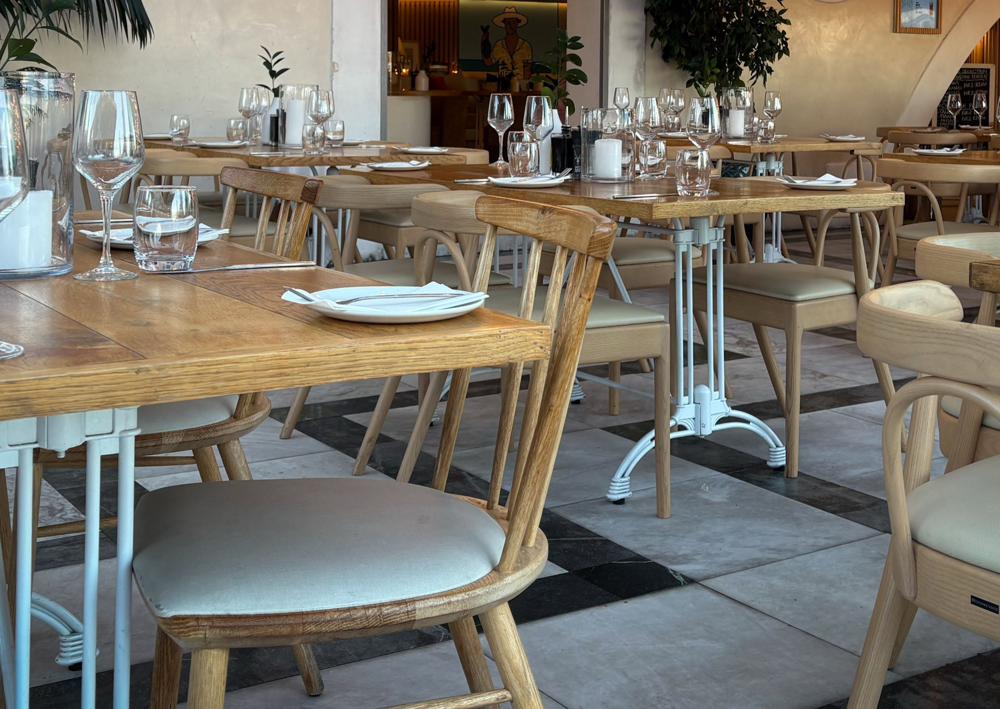
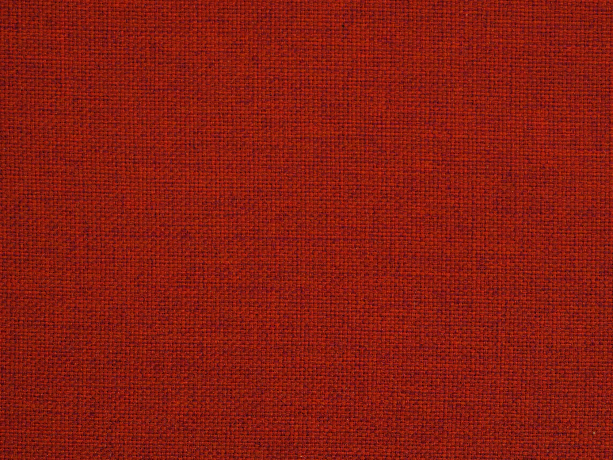
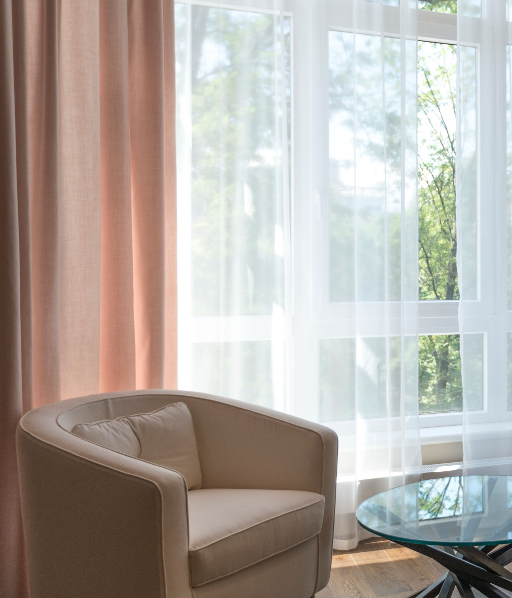

Materials worth living with
Natural grain. An open weave. Light across a quiet surface. A few thoughtful choices give a room its character.



Considered for living
Interiors shaped by natural materials, careful proportions and the way you live.
Explore our spacesFictional studio · Website demonstration
Natural grain. An open weave. Light across a quiet surface. A few thoughtful choices give a room its character.



Cane, wood and tactile fabrics bring a softer rhythm to everyday spaces. Let their natural character stay visible.

Look beyond the photograph. Consider how a space welcomes people, holds a conversation and changes through the day.

Four concept studies. Real reference photography. A feeling carried from the first view to the smallest detail.
Start with the way a room is used, the light it receives and the feeling it should create.
Bring layout, materials and proportion into one clear direction.
Consider lighting, furniture and finishes together, so every decision belongs.
Keep comfort and practical life at the centre of the final arrangement.
We are drawn to rooms that feel easy to be in. Spaces where the materials have depth and the details never compete.
This fictional studio brings that perspective to life as a website concept. The care in the presentation can become the first impression of your own practice.
About the studio
Like the feeling of this place? Let’s talk about a website for your studio.
Start a conversation